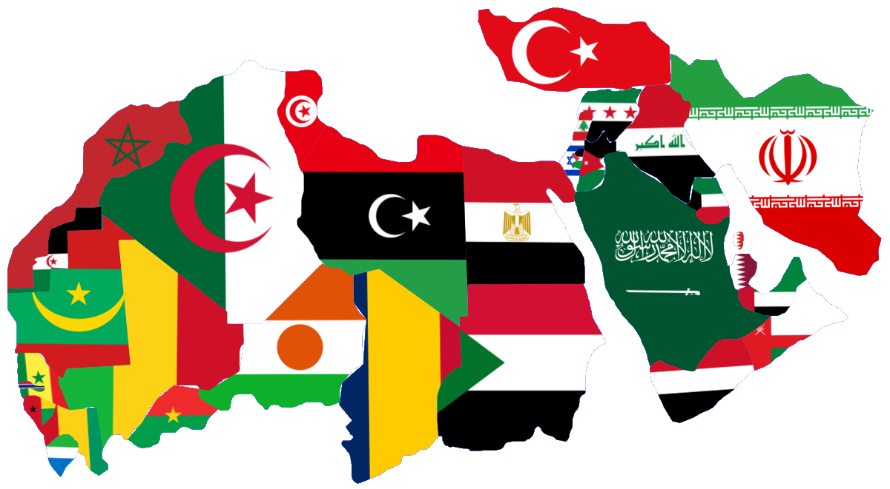

Raíces Milenarias, Puerta del Mundo.
¡Encuentra toda la información que necesitas sobre las 6 regiones geopolíticas!
Ver más ->
Saharabia se caracterizá por su dualidad: posee algunas de las economías más ricas del mundo (exportadores de petróleo del Golfo) junto con economías en desarrollo y estados frágiles que enfrentan desafíos climáticos y sociales extremos.
Saharabia incluye:
Oriente Proximo
Economías de Ingresos Altos: Arabia Saudita, Emiratos Árabes Unidos, Qatar, Kuwait, Omán, Bareín e Israel.
En Desarrollo(o en conflicto): Irak, Iran, Jordania, Libano, Palestina y Siria.
Africa del Norte
Considerados: Argelia, Egipto, Libia, Marruecos, Túnez y, a veces, Mauritania, Sahara occidental y Sudán.
No muy Considerados: Burkina-Faso, Chad, Gambia, Guinea, Guinea-bissau, Mali, Niger, Senegal y Sierra Leona.